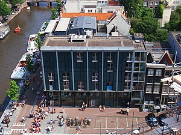

Anne Frank, um símbolo de resistência e esperança.
Annelies Marie Frank (Frankfurt, 12 de junho
de 1929 — Bergen-Belsen, fevereiro ou março de 1945) foi uma adolescente alemã de origem
judaica, vítima do Holocausto. Tornou-se uma das
figuras mais discutidas da história após a divulgação
póstuma do Diário de Anne Frank (1947), no qual
documentou suas experiências enquanto vivia
escondida em cômodos ocultos de uma empresa
durante a ocupação alemã nos Países Baixos na
Segunda Guerra Mundial. Desde então, passou a ser
referida como um "símbolo da luta contra o
preconceito" e teve sua história servindo como base
para diversas peças de teatro e filmes ao longo dos
anos. Em 1999, foi contemplada como uma das
pessoas mais importantes do século XX em uma
lista organizada pela revista Time.
Linha do tempo
1925 - Otto e Edith se casam na sinagoga de
Aachen.
1929 - Nasce Anne Frank em Frankfurt
am Main, Alemanha.
1933 - A família Frank migra para
Amsterdã, Holanda.
1934 - Anne vai para o jardim de infância
na escola Montessori, em Amsterdã.
1941 - Judeus são forçados a ir para
escolas separadas. Anne e Margot têm que ir para o
Joods Lyceum (Escola judaica).
12 de Junho de 1942 - Anne ganha um
diário de presente de seu pai pelo seu aniversário
de 13 anos.
5 de Julho de 1942 - Margot recebe uma
convocação para se apresentar em um "campo de
trabalho" na Alemanha.
6 de Julho de 1942 - A família Frank vai
se esconder no Anexo Secreto.
13 de Julho de 1942 - A família Van Pels
chega ao esconderijo.
4 de Agosto de 1944 - O que há tempos
as pessoas escondidas mais temiam finalmente
acontece: são descobertos e presos.
8 de Agosto de 1944 - As pessoas do
esconderijo são enviadas para o campo de trânsito
de Westerbork (Holanda).
3 de Setembro de 1944 - Deportação
para AuschwitzBirkenau, campo de extermínio
(Polônia ocupada).
6 de Setembro de 1944 - Chegada em
Auschwitz (campo de concentração). Anne
sobrevive a seleção.
Outubro de 1944 - Anne e Margot são
deportadas para o campo de concentração de
Bergen-Belsen (Alemanha).
Março de 1945 - Anne e Margot morrem
de tifo em Bergen-Belsen.
8 de Maio de 1945 - A alemanha se
rende. Otto retorna a Amsterdã,
foi o único sobrevivente da família.
Julho de 1945 - Otto Frank descobre que
Anne e Margot morreram em Bergen Belsen. Depois
disso, Miep Gies lhe dá o diário de Anne.
2 de Setembro de 1945 - Depois dos
bombardeamentos atômicos americanos em
Hiroshima e Nagasaki, o Japão se rende e a guerra
finalmente acaba.
1947 - Em 1947, Otto realiza o sonho de
Anne publicando seu diário. O livro ficou
mundialmente conhecido e foi traduzido em
mais de 30 idiomas, servindo de inspiração para
muitas outras obras. O filme biográfico "O Diário de
Anne Frank", foi lançado em 1959 e recebeu 3
premiações do Oscar.
Museu A Casa de Anne Frank

Em 1960 o prédio que abrigou Anne e sua
famíla é transformado no museu A Casa de Anne
Frank.
Memorial Anne Frank (Idaho)
Em 16 de Agosto de 2002 Anne é
homenageada com um memorial no Centro de
Educação dos Direitos Humanos de Idaho. Como um
presente para a cidade de Boise.
Galeria
Para conhecer mais sobre Anne Frank e sua história,
acesse sua página na Wikipédia.